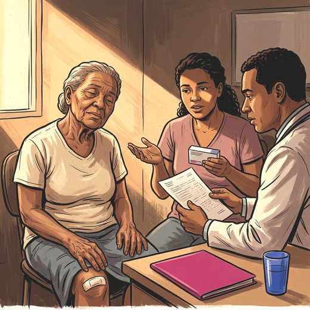

Consulta rápida à beira do leito
Condutas, doses e interações.
Referências da aula · 12
- 2023 American Geriatrics Society Beers Criteria® Update Expert Panel. American Geriatrics Society 2023 updated AGS Beers Criteria® for potentially inappropriate medication use in older adults. J Am Geriatr Soc. 2023;71(7):2052-81. PMID 37139824. doi:10.1111/jgs.18372.PubMedDOI
- O'Mahony D, Cherubini A, Guiteras AR, Denkinger M, Beuscart JB, Onder G, et al. STOPP/START criteria for potentially inappropriate prescribing in older people: version 3. Eur Geriatr Med. 2023;14(4):625-32. PMID 37256475. doi:10.1007/s41999-023-00777-y.PubMedDOI
- Livingston G, Huntley J, Liu KY, Costafreda SG, Selbæk G, Alladi S, et al. Dementia prevention, intervention, and care: 2024 report of the Lancet standing Commission. Lancet. 2024;404(10452):572-628. PMID 39096926. doi:10.1016/S0140-6736(24)01296-0.PubMedDOI
- Schneider LS, Tariot PN, Dagerman KS, Davis SM, Hsiao JK, Ismail MS, et al. Effectiveness of atypical antipsychotic drugs in patients with Alzheimer's disease. N Engl J Med. 2006;355(15):1525-38. PMID 17035647. doi:10.1056/NEJMoa061240.PubMedDOI
- Schneider LS, Dagerman KS, Insel P. Risk of death with atypical antipsychotic drug treatment for dementia: meta-analysis of randomized placebo-controlled trials. JAMA. 2005;294(15):1934-43. PMID 16234500. doi:10.1001/jama.294.15.1934.PubMedDOI
- Mühlbauer V, Möhler R, Dichter MN, Zuidema SU, Köpke S, Luijendijk HJ. Antipsychotics for agitation and psychosis in people with Alzheimer's disease and vascular dementia. Cochrane Database Syst Rev. 2021;12:CD013304. PMID 34918337. doi:10.1002/14651858.CD013304.pub2.PubMedDOI
- Reus VI, Fochtmann LJ, Eyler AE, Hilty DM, Horvitz-Lennon M, Jibson MD, et al. The American Psychiatric Association practice guideline on the use of antipsychotics to treat agitation or psychosis in patients with dementia. Am J Psychiatry. 2016;173(5):543-6. PMID 27133416. doi:10.1176/appi.ajp.2015.173501.PubMedDOI
- American Diabetes Association, American Psychiatric Association, American Association of Clinical Endocrinologists, North American Association for the Study of Obesity. Consensus development conference on antipsychotic drugs and obesity and diabetes. Diabetes Care. 2004;27(2):596-601. PMID 14747245. doi:10.2337/diacare.27.2.596.PubMedDOI
- Kapur S, Seeman P. Does fast dissociation from the dopamine D2 receptor explain the action of atypical antipsychotics? A new hypothesis. Am J Psychiatry. 2001;158(3):360-9. PMID 11229973. doi:10.1176/appi.ajp.158.3.360.PubMedDOI
- Ballard C, Hanney ML, Theodoulou M, Douglas S, McShane R, Kossakowski K, et al. The dementia antipsychotic withdrawal trial (DART-AD): long-term follow-up of a randomised placebo-controlled trial. Lancet Neurol. 2009;8(2):151-7. PMID 19138567. doi:10.1016/S1474-4422(08)70295-3.PubMedDOI
- Seppi K, Ray Chaudhuri K, Coelho M, Fox SH, Katzenschlager R, Perez Lloret S, et al. Update on treatments for nonmotor symptoms of Parkinson's disease: an evidence-based medicine review. Mov Disord. 2019;34(2):180-98. PMID 30653247. doi:10.1002/mds.27602.PubMedDOI
- McKeith IG, Boeve BF, Dickson DW, Halliday G, Taylor JP, Weintraub D, et al. Diagnosis and management of dementia with Lewy bodies: fourth consensus report of the DLB Consortium. Neurology. 2017;89(1):88-100. PMID 28592453. doi:10.1212/WNL.0000000000004058.PubMedDOI